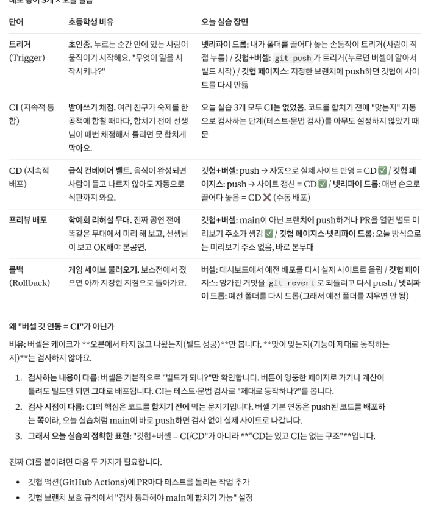
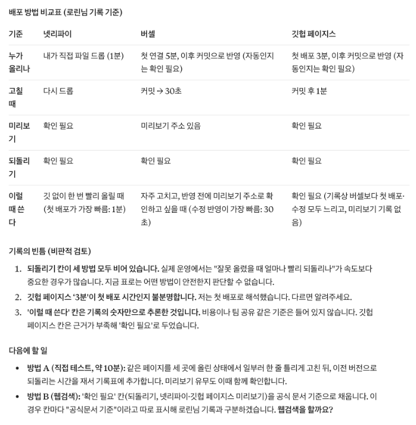

신청 데이터를 정의하고, 미리보기 속 페이지를 인터넷 주소로 꺼내요
먼저 신청 폼에서 어떤 데이터가 들어오고 저장되고 지워지는지 정의해요. 그다음 같은 페이지를 세 가지 방법으로 배포해요. 손으로 끌어다 놓는 넷리파이 드롭, 깃헙에 올리면 자동으로 바뀌는 버셀, 1주차에 해 본 깃헙 페이지스. 마지막에 신청을 내 브라우저에 저장해 보고 한계를 확인해요.
교육 개요
| 시간 | 09:00–18:00 (점심 12:00–13:00, 수업 8시간) |
|---|---|
| 교과 | [기본] AI 서비스 개발 · 4일차 (총 18일) |
| 교육 목표 | 신청 폼의 데이터를 입력·저장·삭제·기본 데이터로 정의하고, 같은 페이지를 수동 배포·자동 배포·미리보기 배포로 꺼내며 브라우저 저장의 한계를 설명할 수 있다. |
| 세션마다 같은 순서 | 개념 → 예시 → 실습 템플릿 → 프롬프트로 시작하기 → 점검·피드백 → 실패 케이스 → 결과 만들기 |
| 수업이 끝나면 | ① 입력·저장·삭제·기본 데이터를 표로 정의한다 ② index.html 한 파일로 결과물을 꺼낸다 ③ 넷리파이 드롭으로 주소를 받는다 ④ CD·CI·트리거·프리뷰·롤백을 한 줄씩 설명한다 ⑤ 버셀 자동 배포와 미리보기 주소를 확인한다 ⑥ 브라우저 저장의 한계를 직접 확인한다 |
수업 전 준비
- 바탕화면 폴더: event-page 같은 이름의 빈 폴더를 만들어 두세요.
- GitHub 로그인: 1주차 GitHub 수업(DAY 3)에서 만든 계정으로 로그인해 두세요.
- 두 번째 브라우저: 크롬 말고 다른 브라우저(엣지·사파리) 하나를 준비해요.
① 개념을 짧게 보고 ② 이커머스 셀렉트마켓으로 채운 예시를 봐요. ③ 빈 템플릿을 내 내용으로 채우고 ④ 같은 일을 프롬프트로 AI에게 시켜 봐요. ⑤ 결과를 점검 프롬프트로 피드백받고 ⑥ 일부러 실패해 본 뒤 ⑦ 오늘의 결과물로 남겨요. 프롬프트는 요청 / 내용 / 형식 3줄로 쓰고, 바꿔 넣을 자리는 [ ]로 표시했어요. 1주차 첫날 배운 4요소(역할·맥락·작업·형식)를 줄인 것이에요. 요청 = 작업, 내용 = 역할과 맥락, 형식 = 형식이에요.
타임테이블
| 시간 | 구분 | 내용 |
|---|---|---|
| 09:00–09:20 | 오늘의 단어 | 오늘의 단어 |
| 09:20–10:20 | SESSION 1 | 신청 데이터 정의하기 |
| 10:20–11:20 | SESSION 2 | 결과물을 한 파일로 꺼내기 |
| 11:20–12:00 | SESSION 3 | 배포 ① 넷리파이 드롭: 손으로 올리기 |
| 12:00–13:00 | 점심 | |
| 13:00–13:40 | SESSION 4 | 배포 단어: CD·CI·트리거·프리뷰·롤백 |
| 13:40–15:00 | SESSION 5 | 배포 ② 버셀: 깃헙에 올리면 자동으로 |
| 15:00–15:30 | SESSION 6 | 배포 ③ 깃헙 페이지스와 배포 비교표 |
| 15:30–17:30 | SESSION 7 | 브라우저 저장으로 신청 목록 만들기 |
| 17:30–18:00 | 정리 | 오늘 정리와 과제 |
오늘의 단어
오늘 처음 나오는 말을 먼저 짧게 짚고 시작해요. 수업 중에 다시 나오면 이 표로 돌아와요.
| 단어 | 뜻 |
|---|---|
| 브라우저 | 크롬·사파리처럼 웹 페이지를 열어 보여 주는 프로그램. 내 컴퓨터·휴대폰 안에 있어요 |
| 서버 | 인터넷 어딘가에서 항상 켜져 있으면서 요청을 받아 처리하는 컴퓨터 |
| 데이터베이스 | 여러 사람의 데이터를 한곳에 모아 두는 저장소. 보통 서버 쪽에 있어요 |
| 브랜치 | 원본(main)은 그대로 두고 따로 고쳐 보는 작업 줄기 |
| 입력 데이터 | 사용자가 화면에서 직접 넣는 값 |
| 기본 데이터 | 사용자가 아무것도 하기 전에 시스템에 이미 있어야 하는 값 |
| 배포 | 내 컴퓨터의 파일을 인터넷 주소로 열 수 있게 올리는 일 |
| CD | 깃헙에 올리면 자동으로 배포되는 흐름 |
| CI | 올린 코드를 자동으로 검사하는 흐름 |
| 프리뷰 배포 | 실제 사이트는 그대로 두고 미리보기 주소를 따로 만드는 배포 |
| 롤백 | 이전 배포로 되돌리기 |
| 브라우저 저장 | 데이터를 지금 쓰는 브라우저 안에만 저장하는 방법 |
신청 데이터 정의하기
개념1-1. 개념
신청 폼을 눌렀을 때 데이터는 어디로 갈까요? 화면을 저장 기능과 연결하기 전에 어떤 데이터가 입력·저장·삭제되는지, 그리고 아무 행동도 하기 전에 시스템에 이미 있어야 하는 기본 데이터가 무엇인지 표로 정해요. 이 표가 오늘 오후 브라우저 저장과 목·금요일 데이터베이스의 설계도예요.
출처: 김수정, 「AI 프로토타입으로 배우는 데이터 서비스기획」 5.2 이벤트 설문신청서 STEP 3·4
예시1-2. 채워진 예시
이커머스 셀렉트마켓 사전 신청 폼의 데이터 정의 예시예요.
| 데이터 | 구분 | 설명 |
|---|---|---|
| 이름·연락처·관심 선물 카테고리·개인정보 동의 | 입력 | 신청자가 폼에 직접 입력 |
| 신청 내역(입력값 + 신청 시각) | 저장 | '사전 신청'을 누르면 신청 목록에 한 줄 생김 |
| 신청 취소 | 삭제 | 마감 전 취소하면 목록에서 제거 |
| 이벤트명·마감일·혜택 3가지 | 기본 | 페이지가 뜨려면 미리 있어야 함 |
| 관심 선물 카테고리 목록 | 기본 | 선택지로 보여 주려면 미리 정해 둬야 함 |
실습 템플릿1-3. 실습 템플릿
예시를 보고 빈칸을 내 내용으로 채워요. 손으로 다 채우지 못해도 괜찮아요. 다음 단계에서 AI로 채우는 방법을 연습해요.
| 데이터 | 구분(입력·저장·삭제·기본) | 설명 |
|---|---|---|
| 입력 | ||
| 저장 | ||
| 삭제 | ||
| 기본 | ||
| 기본 |
데이터 | 구분(입력·저장·삭제·기본) | 설명 | 입력 | | 저장 | | 삭제 | | 기본 | | 기본 |
프롬프트로 시작하기1-4. 프롬프트로 시작하기
템플릿을 손으로 채우는 대신 AI에게 초안을 받아요. [ ] 안은 이커머스 셀렉트마켓 예시 값이에요. 내 내용으로 바꿔 써요.
요청: 이 신청 페이지가 작동하려면 어떤 데이터가 입력·저장·삭제되어야 하는지 표로 정리해 줘. 사용자가 아무 행동도 하기 전에 시스템에 있어야 하는 기본 데이터도 따로 정리해 줘 내용: 페이지: [이커머스 셀렉트마켓 연말 이벤트 사전 신청 페이지] / 신청 폼 항목: [이름, 연락처, 관심 선물 카테고리, 개인정보 동의] / 예외: [중복 신청 막기, 12월 15일 마감] 형식: 표1(데이터 / 구분 / 설명) + 표2(기본 데이터 / 왜 필요한가). PRD에 없는 항목은 '제안'으로 표시

점검·피드백1-5. 점검·피드백
AI가 만든 초안이나 내가 채운 템플릿을 그대로 쓰지 않고, 기준을 주고 점검받아요. 칭찬 말고 고칠 점을 받는 게 목적이에요.
요청: 내 데이터 정의표를 예외 시나리오와 맞춰 점검해 줘 내용: 데이터 정의: [위 표] / 예외: [중복 신청, 마감 지남, 연락처 형식 오류] 형식: 표(예외 상황 / 판단에 필요한 데이터 / 내 표에 있나 O·X). 개인정보로 다뤄야 할 항목도 표시
실패 케이스1-6. 실패 케이스 만들어 보기
일부러 틀리게 해 보고, 결과가 어떻게 달라지는지 확인해요.
| 만들어 볼 실패 | 이렇게 해 봐요 | 무엇이 보이고, 어떻게 풀까 |
|---|---|---|
| 기본 데이터 빼기 | 표에서 '마감일'을 지우고 점검해 봐요. | '마감 지남' 예외를 판단할 데이터가 없다고 나와요. 기본 데이터 칸에 다시 넣어요. |
| 필요 없는 개인정보 넣기 | 입력 데이터에 '생년월일·주소'를 추가해 봐요. | 사전 신청에 꼭 필요하지 않은 개인정보예요. 받는 항목이 늘면 동의 문구와 보관 책임도 늘어요. |
결과 만들기1-7. 결과 만들기
이렇게 보이면 성공예외 상황마다 판단에 필요한 데이터가 표에 있다
결과물을 한 파일로 꺼내기
개념2-1. 개념
배포하려면 결과가 '파일'이어야 해요. 아티팩트 안에만 있으면 밖으로 못 꺼내요. 배포 서비스는 대부분 폴더 안의 index.html을 첫 화면으로 보여 줘요. 그래서 파일 이름·폴더 구조·빈 칸을 체크리스트로 먼저 확인하고 내려받아요.
예시2-2. 채워진 예시
배포 전 파일 준비 체크리스트 예시예요.
| 점검 항목 | 확인 |
|---|---|
| 파일 이름이 index.html이다 | O |
| CSS·스크립트가 한 파일 안에 들어 있다 | O |
| 마감일·혜택 문구에 빈칸이 없다 | O |
| 내 전화번호 같은 실제 개인정보가 없다 | O |
| 더블클릭하면 브라우저에서 열린다(주소창이 file://로 시작) | O |
실습 템플릿2-3. 실습 템플릿
예시를 보고 빈칸을 내 내용으로 채워요. 손으로 다 채우지 못해도 괜찮아요. 다음 단계에서 AI로 채우는 방법을 연습해요.
| 점검 항목 | 확인 |
|---|---|
| 파일 이름이 index.html이다 | |
| 한 파일 안에 모두 들어 있다 | |
| 빈칸·임시 문구가 없다 | |
| 실제 개인정보가 없다 | |
| 더블클릭하면 열린다 |
점검 항목 | 확인 파일 이름이 index.html이다 | 한 파일 안에 모두 들어 있다 | 빈칸·임시 문구가 없다 | 실제 개인정보가 없다 | 더블클릭하면 열린다 |
프롬프트로 시작하기2-4. 프롬프트로 시작하기
템플릿을 손으로 채우는 대신 AI에게 초안을 받아요. [ ] 안은 이커머스 셀렉트마켓 예시 값이에요. 내 내용으로 바꿔 써요.
요청: 이 페이지를 넷리파이 드롭과 깃헙 페이지스에 올리려고 해. 어떤 파일 이름과 폴더 구조로 준비해야 하는지 알려 주고, 한 파일로 합친 index.html로 다시 만들어 줘 내용: 현재 결과물: [이벤트 페이지 v2 아티팩트] / 폴더 이름: [event-page] 형식: 준비 순서 목록(코드 설명 없이) + index.html 한 파일

점검·피드백2-5. 점검·피드백
AI가 만든 초안이나 내가 채운 템플릿을 그대로 쓰지 않고, 기준을 주고 점검받아요. 칭찬 말고 고칠 점을 받는 게 목적이에요.
요청: 이 파일이 배포 전에 고쳐야 할 곳이 있는지 점검해 줘 내용: 점검 기준: [index.html 한 파일, 외부 파일 참조 없음, 빈칸·임시 문구 없음, 실제 개인정보 없음] 형식: 표(기준 / 통과 O·X / 고칠 곳)
실패 케이스2-6. 실패 케이스 만들어 보기
일부러 틀리게 해 보고, 결과가 어떻게 달라지는지 확인해요.
| 만들어 볼 실패 | 이렇게 해 봐요 | 무엇이 보이고, 어떻게 풀까 |
|---|---|---|
| 파일 이름 바꾸기 | 내려받은 파일 이름을 event.html로 두고 다음 세션에서 드롭해 봐요. | 주소에 들어가면 첫 화면이 안 보이거나 파일 목록이 보여요. index.html로 바꿔요. |
| 파일 여러 개로 나누기 | 'CSS를 따로 빼 줘'라고 해서 파일 두 개로 받아 봐요. | 하나만 올리면 디자인이 깨져요. 오늘은 한 파일로 합쳐요. |
결과 만들기2-7. 결과 만들기
이렇게 보이면 성공더블클릭하면 내 브라우저에서 페이지가 열린다
배포 ① 넷리파이 드롭: 손으로 올리기
개념3-1. 개념
가장 단순한 배포예요. 폴더를 app.netlify.com/drop 에 끌어다 놓으면 주소가 생겨요(넷리파이 공식 문서). 대신 고칠 때마다 다시 끌어다 놓아야 해요. 로그인하지 않으면 임시 비밀번호가 걸리고, 가입하면 내 것으로 가져올 수 있어요. 오늘은 배포 기록표에 걸린 시간을 적어 오후의 자동 배포와 비교해요. 폴더나 zip 파일을 올릴 수 있고, 50MB 이하가 가장 잘 돼요. 고칠 때는 사이트 화면의 Production deploys 칸에 고친 폴더를 다시 끌어다 놓아요(넷리파이 공식 문서). 비슷한 방법으로 버셀 드롭(vercel.com/drop)도 있어요. 로그인 없이 정적 사이트를 올리면 임시 배포가 되고, 정해진 시간 안에 Claim your project로 가져가지 않으면 사라져요(버셀 공식 문서).
예시3-2. 채워진 예시
배포 기록표 예시예요. 오늘 배포 세 가지를 모두 이 표에 적어요.
| 배포 방법 | 주소 | 처음 올린 시간 | 고친 뒤 다시 올린 시간 | 누가 올리나 |
|---|---|---|---|---|
| 넷리파이 드롭 | ○○○.netlify.app | 1분 | 1분(다시 드롭) | 나 |
| 버셀 | event-page.vercel.app | 5분(연결 포함) | 30초(커밋만) | 자동 |
| 깃헙 페이지스 | 아이디.github.io/event-page | 3분 | 1분(커밋 후 대기) | 자동 |
실습 템플릿3-3. 실습 템플릿
예시를 보고 빈칸을 내 내용으로 채워요. 손으로 다 채우지 못해도 괜찮아요. 다음 단계에서 AI로 채우는 방법을 연습해요.
| 배포 방법 | 주소 | 처음 올린 시간 | 고친 뒤 다시 올린 시간 | 누가 올리나 |
|---|---|---|---|---|
| 넷리파이 드롭 | ||||
| 버셀 | ||||
| 깃헙 페이지스 |
배포 방법 | 주소 | 처음 올린 시간 | 고친 뒤 다시 올린 시간 | 누가 올리나 넷리파이 드롭 | | | | 버셀 | | | | 깃헙 페이지스 | | | |
프롬프트로 시작하기3-4. 프롬프트로 시작하기
템플릿을 손으로 채우는 대신 AI에게 초안을 받아요. [ ] 안은 이커머스 셀렉트마켓 예시 값이에요. 내 내용으로 바꿔 써요.
요청: 넷리파이 드롭으로 event-page 폴더를 배포하려고 해. 화면에서 할 일을 순서대로 알려 줘 내용: 폴더: [event-page, 안에 index.html 한 개] / 계정: [아직 넷리파이 가입 안 함] 형식: 단계 목록, 단계마다 '이렇게 보이면 성공' 한 줄. 로그인하지 않았을 때 생기는 제한도 알려 줘

점검·피드백3-5. 점검·피드백
AI가 만든 초안이나 내가 채운 템플릿을 그대로 쓰지 않고, 기준을 주고 점검받아요. 칭찬 말고 고칠 점을 받는 게 목적이에요.
요청: 내 배포 기록표를 보고 빠진 칸과 다음에 비교할 점을 알려 줘 내용: 기록표: [넷리파이 드롭 / 주소 ○○○.netlify.app / 처음 1분 / 다시 올리기 1분 / 나] 형식: 빠진 칸 목록 + 오후 버셀과 비교할 질문 2개
실패 케이스3-6. 실패 케이스 만들어 보기
일부러 틀리게 해 보고, 결과가 어떻게 달라지는지 확인해요.
| 만들어 볼 실패 | 이렇게 해 봐요 | 무엇이 보이고, 어떻게 풀까 |
|---|---|---|
| 로그인 없이 드롭 | 넷리파이에 로그인하지 않고 폴더를 드롭해 봐요. | 주소에 임시 비밀번호가 걸려요(넷리파이 공식 문서). 가입해서 내 것으로 가져와야 남에게 보여 줄 수 있어요. |
| 파일만 드롭 | 폴더 대신 index.html 파일 하나만 끌어다 놓아 봐요. | 드롭 화면이 받지 않거나 결과가 다를 수 있어요. 폴더째 올려요. |
결과 만들기3-7. 결과 만들기
이렇게 보이면 성공휴대폰에서 주소가 열린다
배포 단어: CD·CI·트리거·프리뷰·롤백
개념4-1. 개념
현업에서는 '푸시하면 CD 돌아요', '프리뷰 링크 확인해 주세요' 같은 말을 써요. 배포는 세 단계로 자라요. ① 손으로 올리기(드롭) → ② 깃헙에 올리면 자동 배포(CD) → ③ 자동 검사를 통과해야 배포(CI). 셀렉트웨이 홈페이지도 'PR을 열면 미리보기 주소 → 확인 후 병합 → 실제 사이트 자동 배포' 흐름으로 운영해요.
예시4-2. 채워진 예시
단어를 오늘 실습 장면과 연결한 예시예요.
| 단어 | 뜻 | 오늘 실습에서 보이는 장면 |
|---|---|---|
| 트리거 | 배포를 시작하게 만드는 사건 | 깃헙에 커밋하는 순간 |
| CD | 트리거가 생기면 자동으로 배포 | 버셀이 커밋을 보고 사이트를 새로 만든다 |
| CI | 배포 전에 자동으로 검사 | 오늘은 없음(검사 없이 바로 배포) |
| 프리뷰 배포 | 실제 사이트는 두고 미리보기 주소를 따로 만듦 | main이 아닌 브랜치에 커밋하면 생기는 주소 |
| 롤백 | 이전 배포로 되돌리기 | 버셀 배포 기록에서 이전 배포 선택 |
실습 템플릿4-3. 실습 템플릿
예시를 보고 빈칸을 내 내용으로 채워요. 손으로 다 채우지 못해도 괜찮아요. 다음 단계에서 AI로 채우는 방법을 연습해요.
| 단어 | 내 말로 한 줄 | 오늘 실습에서 보이는 장면 |
|---|---|---|
| 트리거 | ||
| CD | ||
| CI | ||
| 프리뷰 배포 | ||
| 롤백 |
단어 | 내 말로 한 줄 | 오늘 실습에서 보이는 장면 트리거 | | CD | | CI | | 프리뷰 배포 | | 롤백 | |
프롬프트로 시작하기4-4. 프롬프트로 시작하기
템플릿을 손으로 채우는 대신 AI에게 초안을 받아요. [ ] 안은 이커머스 셀렉트마켓 예시 값이에요. 내 내용으로 바꿔 써요.
요청: 배포 단어 5개를 초등학생도 이해할 비유로 설명하고, 내 실습 장면과 연결해 줘 내용: 단어: [트리거, CD, CI, 프리뷰 배포, 롤백] / 오늘 실습: [넷리파이 드롭, 깃헙+버셀 자동 배포, 깃헙 페이지스] 형식: 표(단어 / 비유 / 오늘 실습 장면). 버셀 깃 연동만으로는 CI가 아니라는 점도 짚어 줘

점검·피드백4-5. 점검·피드백
AI가 만든 초안이나 내가 채운 템플릿을 그대로 쓰지 않고, 기준을 주고 점검받아요. 칭찬 말고 고칠 점을 받는 게 목적이에요.
요청: 내가 쓴 단어 설명이 맞는지 퀴즈처럼 채점해 줘 내용: 내 설명: [트리거 = 배포 버튼 / CD = 깃헙에 올리면 자동 배포 / CI = 자동 배포와 같은 말 / 프리뷰 = 실제 사이트 / 롤백 = 이전 배포로 되돌리기] 형식: 표(단어 / 정답 O·X / 고친 설명)
실패 케이스4-6. 실패 케이스 만들어 보기
일부러 틀리게 해 보고, 결과가 어떻게 달라지는지 확인해요.
| 만들어 볼 실패 | 이렇게 해 봐요 | 무엇이 보이고, 어떻게 풀까 |
|---|---|---|
| CI와 CD 섞어 쓰기 | '버셀 연결했으니 CI/CD 완성'이라고 쓰고 채점받아 봐요. | 자동 검사 단계가 없으니 CI는 아니라고 나와요. 오늘 만든 것은 CD예요. |
| 프리뷰를 실제 사이트로 착각 | 프리뷰 주소를 '배포 완료 주소'로 적어 봐요. | 프리뷰는 확인용이에요. 실제 주소는 main에 병합해야 바뀌어요. |
결과 만들기4-7. 결과 만들기
이렇게 보이면 성공채점에서 5개 모두 O가 나왔다
배포 ② 버셀: 깃헙에 올리면 자동으로
개념5-1. 개념
깃헙 저장소와 버셀을 연결해 두면 커밋할 때마다 사이트가 저절로 바뀌어요(CD). main이 아닌 브랜치에서 고치면 실제 사이트는 그대로 두고 미리보기 주소가 따로 생겨요(버셀 공식 문서). 버셀 무료(Hobby) 계정은 조직 소유의 비공개 저장소는 배포할 수 없으니 내 개인 저장소로 해요. 브랜치는 깃헙 저장소 화면 왼쪽 위의 브랜치 선택 버튼(main이라고 적힌 곳)에서 새 이름을 입력해 만들어요. 되돌리기는 프로젝트 첫 화면의 Production Deployment 칸에서 Instant Rollback을 눌러요. 무료 플랜은 바로 이전 배포로만 되돌릴 수 있어요. 되돌린 뒤에는 새로 커밋해도 실제 사이트에 자동 반영되지 않으니, 다시 반영하려면 같은 칸의 Undo Rollback을 눌러요(버셀 공식 문서).
예시5-2. 채워진 예시
버셀 자동 배포 확인표 예시예요.
| 확인할 장면 | 결과 |
|---|---|
| 저장소 event-page에 index.html이 있다 | O |
| 버셀에서 저장소를 가져와 첫 배포 | event-page.vercel.app 받음 |
| 깃헙에서 문구 고치고 커밋 | 30초 뒤 사이트가 바뀜 |
| new-copy 브랜치에서 문구 고치고 커밋 | 미리보기 주소가 따로 생김, 실제 주소는 그대로 |
| Production Deployment 칸 → Instant Rollback | 이전 문구로 돌아감 |
| Undo Rollback | 커밋이 다시 자동 반영됨 |
실습 템플릿5-3. 실습 템플릿
예시를 보고 빈칸을 내 내용으로 채워요. 손으로 다 채우지 못해도 괜찮아요. 다음 단계에서 AI로 채우는 방법을 연습해요.
| 확인할 장면 | 결과 |
|---|---|
| 저장소에 index.html이 있다 | |
| 첫 배포 주소 | |
| 커밋 후 자동 반영 | |
| 브랜치 미리보기 주소 | |
| Instant Rollback으로 되돌리기 | |
| Undo Rollback으로 자동 반영 되살리기 |
확인할 장면 | 결과 저장소에 index.html이 있다 | 첫 배포 주소 | 커밋 후 자동 반영 | 브랜치 미리보기 주소 | Instant Rollback으로 되돌리기 | Undo Rollback으로 자동 반영 되살리기 |
프롬프트로 시작하기5-4. 프롬프트로 시작하기
템플릿을 손으로 채우는 대신 AI에게 초안을 받아요. [ ] 안은 이커머스 셀렉트마켓 예시 값이에요. 내 내용으로 바꿔 써요.
요청: 깃헙 저장소를 버셀에 연결해 자동 배포하려고 해. 화면에서 눌러야 할 순서를 알려 줘 내용: 저장소: [내 개인 계정의 event-page, 파일은 index.html 한 개] / 버셀 계정: [깃헙으로 가입할 예정] 형식: 단계 목록, 단계마다 확인할 것 포함. 마지막에 브랜치로 미리보기 주소 만드는 방법

점검·피드백5-5. 점검·피드백
AI가 만든 초안이나 내가 채운 템플릿을 그대로 쓰지 않고, 기준을 주고 점검받아요. 칭찬 말고 고칠 점을 받는 게 목적이에요.
요청: 버셀 배포가 실패했을 때 읽는 법을 연습하고 싶어. 아래 기록이 무슨 뜻인지 알려 줘 내용: 배포 기록: [Error: No Output Directory named "public" found after the Build completed.] 형식: 원인 1줄 + 내가 할 일 + 다시 실패했을 때 붙여 넣을 정보
실패 케이스5-6. 실패 케이스 만들어 보기
일부러 틀리게 해 보고, 결과가 어떻게 달라지는지 확인해요.
| 만들어 볼 실패 | 이렇게 해 봐요 | 무엇이 보이고, 어떻게 풀까 |
|---|---|---|
| 조직 저장소 연결 | 조직 소유의 비공개 저장소를 무료 계정으로 연결해 봐요. | 배포할 수 없다는 안내가 나와요. 내 개인 계정 저장소로 옮기거나 공개로 바꿔요. |
| main에서 바로 실험 | 실험 문구를 main에 바로 커밋해 봐요. | 실제 사이트가 바로 바뀌어요. 실험은 브랜치에서 하고 미리보기 주소로 확인해요. |
| 되돌린 채로 커밋하기 | Instant Rollback을 한 뒤 문구를 고쳐 커밋해 봐요. | 사이트가 바뀌지 않아요. 되돌리면 자동 반영이 꺼지기 때문이에요. Undo Rollback을 누르면 다시 반영돼요(버셀 공식 문서). |
결과 만들기5-7. 결과 만들기
이렇게 보이면 성공커밋만 했는데 사이트가 바뀌었다
배포 ③ 깃헙 페이지스와 배포 비교표
개념6-1. 개념
세 방법 모두 '주소가 생긴다'는 결과는 같아요. 차이는 누가, 언제, 어떻게 올리고 되돌리느냐예요. 같은 저장소에서 깃헙 페이지스를 켜고(1주차 GitHub 수업과 같은 방법: Settings → Pages → Build and deployment의 Source를 Deploy from a branch로 → 브랜치 main, 폴더 /(root) → Save, 깃헙 공식 문서), 상황별로 무엇을 고를지 비교표로 정리해요.
예시6-2. 채워진 예시
배포 비교표 예시예요.
| 기준 | 넷리파이 드롭 | 버셀 | 깃헙 페이지스 |
|---|---|---|---|
| 누가 올리나 | 나(끌어다 놓기) | 자동(커밋) | 자동(커밋) |
| 고칠 때 | 다시 드롭 | 커밋 | 커밋 |
| 미리보기 주소 | 없음 | 브랜치마다 생김 | 없음 |
| 되돌리기 | 이전 배포 선택 | 이전 배포 선택 | 이전 커밋으로 |
| 이럴 때 쓴다 | 오늘 당장 보여 줄 시안 | 계속 고치는 서비스 | 문서·교안처럼 단순한 페이지 |
실습 템플릿6-3. 실습 템플릿
예시를 보고 빈칸을 내 내용으로 채워요. 손으로 다 채우지 못해도 괜찮아요. 다음 단계에서 AI로 채우는 방법을 연습해요.
| 기준 | 넷리파이 드롭 | 버셀 | 깃헙 페이지스 |
|---|---|---|---|
| 누가 올리나 | |||
| 고칠 때 | |||
| 미리보기 주소 | |||
| 되돌리기 | |||
| 이럴 때 쓴다 |
기준 | 넷리파이 드롭 | 버셀 | 깃헙 페이지스 누가 올리나 | | | 고칠 때 | | | 미리보기 주소 | | | 되돌리기 | | | 이럴 때 쓴다 | | |
프롬프트로 시작하기6-4. 프롬프트로 시작하기
템플릿을 손으로 채우는 대신 AI에게 초안을 받아요. [ ] 안은 이커머스 셀렉트마켓 예시 값이에요. 내 내용으로 바꿔 써요.
요청: 내 배포 기록표를 바탕으로 세 배포 방법 비교표를 만들어 줘 내용: 기록표: [넷리파이 드롭 1분·다시 드롭 / 버셀 첫 5분·커밋 30초·미리보기 주소 / 깃헙 페이지스 3분·커밋 후 1분] 형식: 표(기준: 누가 올리나·고칠 때·미리보기·되돌리기·이럴 때 쓴다). 내 기록에 없는 내용은 '확인 필요'

점검·피드백6-5. 점검·피드백
AI가 만든 초안이나 내가 채운 템플릿을 그대로 쓰지 않고, 기준을 주고 점검받아요. 칭찬 말고 고칠 점을 받는 게 목적이에요.
요청: 이 상황에서는 어떤 배포 방법이 맞는지 퀴즈 3문제를 내 줘. 한 문제씩 내고 내 답을 기다려 내용: 주제: [넷리파이 드롭, 버셀, 깃헙 페이지스 중 고르기] 형식: 문제마다 정답과 이유
실패 케이스6-6. 실패 케이스 만들어 보기
일부러 틀리게 해 보고, 결과가 어떻게 달라지는지 확인해요.
| 만들어 볼 실패 | 이렇게 해 봐요 | 무엇이 보이고, 어떻게 풀까 |
|---|---|---|
| 페이지스 설정 안 켜기 | 저장소만 만들고 Pages 설정을 건너뛰어 봐요. | github.io 주소가 404로 떠요. Settings → Pages에서 Source를 Deploy from a branch로 바꾸고 Save를 눌러요. |
| 비교 기준 없이 표 만들기 | '세 개 비교해 줘'만 보내 봐요. | 장단점이 길게 나오지만 상황별로 고를 수 없어요. 기준 칸을 정해서 다시 요청해요. |
결과 만들기6-7. 결과 만들기
이렇게 보이면 성공'이럴 때 쓴다' 칸이 세 방법 모두 다르다
브라우저 저장으로 신청 목록 만들기
개념7-1. 개념
웹에는 세 등장인물이 있어요. 화면을 보여 주는 브라우저(내 기기), 요청을 받아 처리하는 서버, 데이터를 모아 두는 데이터베이스예요. 오늘은 서버 없이 가장 쉬운 저장 방법인 '지금 쓰는 브라우저 안에 저장'을 써요. 새로고침해도 남지만, 다른 브라우저·시크릿 창·다른 사람 컴퓨터에서는 보이지 않아요. 이 한계를 직접 겪는 것이 목표예요. 그래야 왜 서버 데이터베이스가 필요한지 설명할 수 있어요.
예시7-2. 채워진 예시
저장 위치 확인표 예시예요.
| 어디서 열었나 | 신청 목록이 보이나 | 이유 |
|---|---|---|
| 같은 크롬, 새로고침 | 보임 | 같은 브라우저 저장 공간 |
| 같은 크롬, 시크릿 창 | 안 보임 | 시크릿 창은 저장 공간이 따로 |
| 엣지·사파리 | 안 보임 | 브라우저마다 저장 공간이 따로 |
| 휴대폰 | 안 보임 | 기기가 다름 |
실습 템플릿7-3. 실습 템플릿
예시를 보고 빈칸을 내 내용으로 채워요. 손으로 다 채우지 못해도 괜찮아요. 다음 단계에서 AI로 채우는 방법을 연습해요.
| 어디서 열었나 | 신청 목록이 보이나 | 이유 |
|---|---|---|
| 같은 브라우저, 새로고침 | ||
| 시크릿 창 | ||
| 다른 브라우저 | ||
| 휴대폰 |
어디서 열었나 | 신청 목록이 보이나 | 이유 같은 브라우저, 새로고침 | | 시크릿 창 | | 다른 브라우저 | | 휴대폰 | |
프롬프트로 시작하기7-4. 프롬프트로 시작하기
템플릿을 손으로 채우는 대신 AI에게 초안을 받아요. [ ] 안은 이커머스 셀렉트마켓 예시 값이에요. 내 내용으로 바꿔 써요.
요청: 신청 폼에 입력하면 이 브라우저에 저장되고, 아래에 신청 목록과 삭제 버튼이 보이게 해 줘. 다른 부분은 그대로 둬 내용: 저장할 항목: [데이터 정의표의 입력 데이터 + 신청 시각] / 예외: [같은 연락처로 다시 신청하면 저장하지 않고 '이미 신청하셨어요' 안내] 형식: 바꾼 부분 요약 3줄 + 미리보기

점검·피드백7-5. 점검·피드백
AI가 만든 초안이나 내가 채운 템플릿을 그대로 쓰지 않고, 기준을 주고 점검받아요. 칭찬 말고 고칠 점을 받는 게 목적이에요.
요청: 왜 다른 브라우저에서는 신청 목록이 안 보이는지, 모두가 같은 목록을 보려면 무엇이 필요한지 설명해 줘 내용: 현재 방식: [브라우저 저장] / 내 확인표: [새로고침 보임, 시크릿 창·다른 브라우저·휴대폰 안 보임] 형식: 초등학생도 이해할 비유 1개 + 필요한 것 목록. 개인정보를 브라우저에 저장할 때 주의점도
실패 케이스7-6. 실패 케이스 만들어 보기
일부러 틀리게 해 보고, 결과가 어떻게 달라지는지 확인해요.
| 만들어 볼 실패 | 이렇게 해 봐요 | 무엇이 보이고, 어떻게 풀까 |
|---|---|---|
| 시크릿 창에서 확인 | 시크릿 창으로 배포 주소를 열어 봐요. | 목록이 비어 있어요. 저장된 곳이 '그 브라우저'라서 그래요. |
| 중복 신청 규칙 빼기 | 예외 줄을 빼고 요청한 뒤 같은 연락처로 두 번 신청해 봐요. | 두 줄이 다 저장돼요. 데이터 정의표의 예외를 요청에 다시 넣어요. |
결과 만들기7-7. 결과 만들기
이렇게 보이면 성공확인표의 네 줄이 모두 채워졌고 '서버 데이터베이스'가 왜 필요한지 한 줄로 쓸 수 있다
오늘 정리와 과제
오늘의 규칙 3줄
- 저장 기능을 붙이기 전에 데이터 정의표부터 쓴다
- 배포는 누가·언제·어떻게 올리고 되돌리는지로 고른다
- 브라우저 저장은 그 브라우저에만 남는다
데이터 정의표 + 배포 주소 3개 + 배포 비교표 + 저장 위치 확인표
같은 사람이 두 번 신청하면 어떻게 할지 정책을 한 줄로 정해 와요. 목·금요일 데이터베이스에 그대로 적용해요.